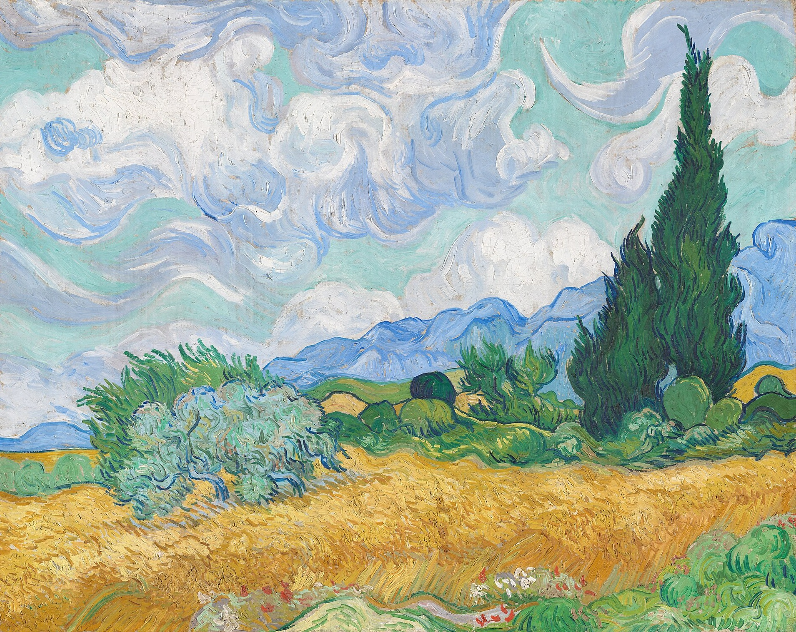

麦田与柏树 A Wheatfield, with Cypresses
麦田与柏树 / A Wheatfield, with Cypresses · 梵高 / Vincent van Gogh · 1889年9月 / September 1889 · 伦敦国家美术馆，43号展厅 / The National Gallery, London, Room 43
图片：Wikimedia Commons，公有领域 / Image: Wikimedia Commons, public domain

发现 · Discover
金色麦田 The wheat field
金色的麦田，是普罗旺斯夏天最典型的景色。
The golden wheat field is a classic sight of a Provençal summer.
柏树 The cypresses
1889年6月底，他决定把在圣雷米最早的一组画，献给这些高耸的柏树。
In late June 1889, he decided to devote one of his first series at Saint-Rémy to these towering trees.
橄榄树丛 The olive bush
麦田旁边是一丛橄榄树，同样是普罗旺斯的典型景物。
Beside the wheat is an olive bush, another typical sight of Provence.
蓝色的山 The blue mountains
远处蓝色的山，是阿尔皮耶山。
The blue mountains in the distance are the Alpilles.
风 The mistral
他写到自己在夏天的密史脱拉风里户外作画。这股又强又冷的风，让整片风景都动了起来。
He wrote of painting outdoors in the summer mistral, the strong, cold wind of southern France, which seems to set the whole landscape in motion.
给母亲和妹妹 For his mother and sister
他还为母亲和妹妹画了一幅小一点的复本，就像他对卧室做过的那样。
He also made a smaller copy for his mother and sister, just as he did with The Bedroom.
故事 · The story
ACT I 第一幕 · 在现场 On the spot
1889年5月，梵高自愿住进圣雷米的圣保罗疗养院。6月底，他走到户外，在麦田边画下了第一幅习作。它现在在纽约大都会博物馆。
In May 1889, Van Gogh voluntarily entered the asylum of Saint-Paul de Mausole in Saint-Rémy. In late June, he went outdoors and painted a first study by the wheat field. It is now at the Metropolitan Museum in New York.
ACT II 第二幕 · 在房间里 In his room
九月，他被限制在病房里，凭着那幅习作，画出了这幅定稿。
In September, confined to his room, he painted this finished version from that study.
定稿 · 1889年9月 · 伦敦国家美术馆 / Finished version · September 1889 · The National Gallery, London
ACT III 第三幕 · 来到伦敦 To London
1923年，伦敦国家美术馆用考陶尔德基金买下了这幅画。今天，它就挂在43号展厅。
In 1923, the National Gallery in London bought the painting with the Courtauld Fund. Today it hangs in Room 43.
除了凝望麦田，还能做什么呢。 What else can one do… but gaze upon the wheatfields.
作品档案 · Artwork record
| 画家（生卒年） · Artist (dates) | 文森特·梵高（1853–1890） / Vincent van Gogh (1853–1890) |
|---|---|
| 画名 · Title | 麦田与柏树 / A Wheatfield, with Cypresses |
| 年份 · Date | 1889年9月，圣雷米 / September 1889, Saint-Rémy |
| 材质 · Medium | 布面油画 / Oil on canvas |
| 收藏地 · Collection | 伦敦国家美术馆，43号展厅 / The National Gallery, London, Room 43 |
| 来源说明 · Credit line | Bought, Courtauld Fund, 1923 |
| 博物馆作品页 · Museum page | https://www.nationalgallery.org.uk/paintings/vincent-van-gogh-a-wheatfield-with-cypresses |
关于画家 · About the artist
文森特·梵高（1853–1890），荷兰画家。他将近27岁才开始画画，短短十年留下了大量作品。1888年他来到法国南部的阿尔勒，在那里画出了许多最著名的画。
Vincent van Gogh (1853–1890) was a Dutch painter. He began painting at around 27 and left a huge body of work in just ten years. In 1888 he moved to Arles in the south of France, where he painted many of his best-known works.
更多梵高的画 · More by Vincent van Gogh